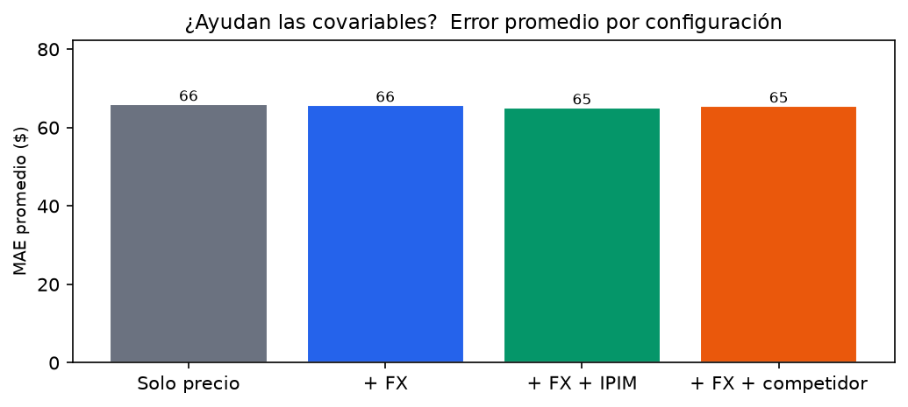
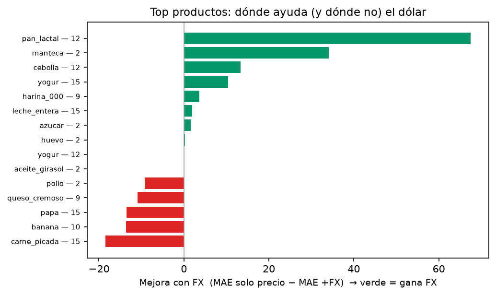
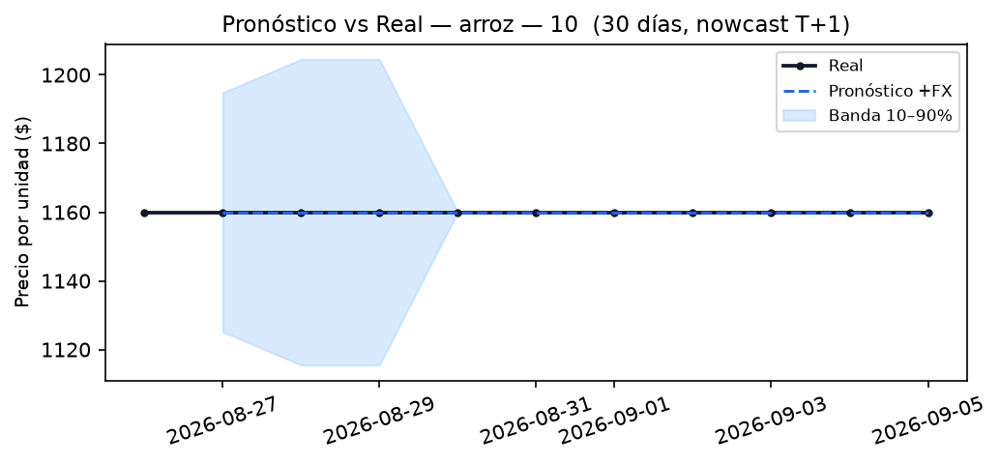
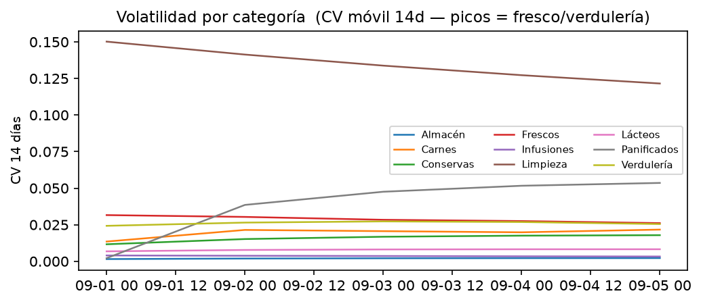

Rango: 2026-08-26 → 2026-09-05 · Archivos: 11 · Sucursales: 14 · Cadenas: Carrefour, Coto, DIA, La Anónima, Jumbo/Vea/Disco
Gran Rosario Walk-forward 30 días (h=1) TimesFM 3 FX real: bluelytics.com.ar diario (blue/oficial); IPIM real: INDEC 448.1_NIVEL_GENERAL_0_0_13_46 mensual, último publicado a cada fecha (lag 60d, step-forward sin interpolar futuro; 11/11 días con valor; series-tiempo 448.1_NIVEL_GENERAL_0_0_13_46 (cache vencida data/covariates/ipim_series_tiempo.csv))
Generado 2026-09-05 18:30 — datos: data/rosario-*.json → forecast/eval_results.json

| Config | MAE ($) |
|---|---|
| Solo precio | 65.9 |
| + FX | 65.7 |
| + FX + IPIM | 65.0 |
| + FX + competidor | 65.5 |



| mae | mape | rmse | coverage | n | series | pid | chain | config | category | event_daily_sube_n | event_daily_sube_actual | event_daily_sube_hits | event_daily_sube_precision | event_daily_sube_recall | event_daily_sube_f1 | event_daily_baja_n | event_daily_baja_actual | event_daily_baja_hits | event_daily_baja_precision | event_daily_baja_recall | event_daily_baja_f1 | event_daily_estable_n | event_daily_estable_actual | event_daily_estable_hits | event_daily_estable_precision | event_daily_estable_recall | event_daily_estable_f1 | event_weekly_sube_n | event_weekly_sube_actual | event_weekly_sube_hits | event_weekly_sube_precision | event_weekly_sube_recall | event_weekly_sube_f1 | event_weekly_baja_n | event_weekly_baja_actual | event_weekly_baja_hits | event_weekly_baja_precision | event_weekly_baja_recall | event_weekly_baja_f1 | event_weekly_estable_n | event_weekly_estable_actual | event_weekly_estable_hits | event_weekly_estable_precision | event_weekly_estable_recall | event_weekly_estable_f1 | event_move_precision_daily | event_move_precision_weekly | fallback_naive | fallback_cov_dropped | _daily_pairs | _weekly_pairs |
|---|---|---|---|---|---|---|---|---|---|---|---|---|---|---|---|---|---|---|---|---|---|---|---|---|---|---|---|---|---|---|---|---|---|---|---|---|---|---|---|---|---|---|---|---|---|---|---|---|---|---|---|
| 0.0 | 0.0 | 0.0 | 1.0 | 10 | detergente__10 | detergente | 10 | plus_fx_competitor | Limpieza | 0 | 0 | 0 | 0.0 | 0.0 | 0.0 | 0 | 0 | 0 | 0.0 | 0.0 | 0.0 | 10 | 10 | 10 | 100.0 | 100.0 | 100.0 | 0 | 0 | 0 | 0.0 | 0.0 | 0.0 | 0 | 0 | 0 | 0.0 | 0.0 | 0.0 | 4 | 4 | 4 | 100.0 | 100.0 | 100.0 | {'sube': 0.0, 'baja': 0.0, 'n_sube': 0, 'n_baja': 0} | {'sube': 0.0, 'baja': 0.0, 'n_sube': 0, 'n_baja': 0} | 5 | 0 | [(estable, estable), (estable, estable), (estable, estable), (estable, estable), (estable, estable), (estable, estable), (estable, estable), (estable, estable), (estable, estable), (estable, estable)] | [(estable, estable), (estable, estable), (estable, estable), (estable, estable)] |
| 0.0 | 0.0 | 0.0 | 1.0 | 10 | manzana__15 | manzana | 15 | price_only | Verdulería | 0 | 0 | 0 | 0.0 | 0.0 | 0.0 | 0 | 0 | 0 | 0.0 | 0.0 | 0.0 | 10 | 10 | 10 | 100.0 | 100.0 | 100.0 | 0 | 0 | 0 | 0.0 | 0.0 | 0.0 | 0 | 0 | 0 | 0.0 | 0.0 | 0.0 | 4 | 4 | 4 | 100.0 | 100.0 | 100.0 | {'sube': 0.0, 'baja': 0.0, 'n_sube': 0, 'n_baja': 0} | {'sube': 0.0, 'baja': 0.0, 'n_sube': 0, 'n_baja': 0} | 5 | 0 | [(estable, estable), (estable, estable), (estable, estable), (estable, estable), (estable, estable), (estable, estable), (estable, estable), (estable, estable), (estable, estable), (estable, estable)] | [(estable, estable), (estable, estable), (estable, estable), (estable, estable)] |
| 0.0 | 0.0 | 0.0 | 1.0 | 10 | manzana__15 | manzana | 15 | plus_fx | Verdulería | 0 | 0 | 0 | 0.0 | 0.0 | 0.0 | 0 | 0 | 0 | 0.0 | 0.0 | 0.0 | 10 | 10 | 10 | 100.0 | 100.0 | 100.0 | 0 | 0 | 0 | 0.0 | 0.0 | 0.0 | 0 | 0 | 0 | 0.0 | 0.0 | 0.0 | 4 | 4 | 4 | 100.0 | 100.0 | 100.0 | {'sube': 0.0, 'baja': 0.0, 'n_sube': 0, 'n_baja': 0} | {'sube': 0.0, 'baja': 0.0, 'n_sube': 0, 'n_baja': 0} | 5 | 0 | [(estable, estable), (estable, estable), (estable, estable), (estable, estable), (estable, estable), (estable, estable), (estable, estable), (estable, estable), (estable, estable), (estable, estable)] | [(estable, estable), (estable, estable), (estable, estable), (estable, estable)] |
| 0.0 | 0.0 | 0.0 | 1.0 | 10 | manzana__15 | manzana | 15 | plus_fx_ipim | Verdulería | 0 | 0 | 0 | 0.0 | 0.0 | 0.0 | 0 | 0 | 0 | 0.0 | 0.0 | 0.0 | 10 | 10 | 10 | 100.0 | 100.0 | 100.0 | 0 | 0 | 0 | 0.0 | 0.0 | 0.0 | 0 | 0 | 0 | 0.0 | 0.0 | 0.0 | 4 | 4 | 4 | 100.0 | 100.0 | 100.0 | {'sube': 0.0, 'baja': 0.0, 'n_sube': 0, 'n_baja': 0} | {'sube': 0.0, 'baja': 0.0, 'n_sube': 0, 'n_baja': 0} | 5 | 0 | [(estable, estable), (estable, estable), (estable, estable), (estable, estable), (estable, estable), (estable, estable), (estable, estable), (estable, estable), (estable, estable), (estable, estable)] | [(estable, estable), (estable, estable), (estable, estable), (estable, estable)] |
| 0.0 | 0.0 | 0.0 | 1.0 | 10 | manzana__15 | manzana | 15 | plus_fx_competitor | Verdulería | 0 | 0 | 0 | 0.0 | 0.0 | 0.0 | 0 | 0 | 0 | 0.0 | 0.0 | 0.0 | 10 | 10 | 10 | 100.0 | 100.0 | 100.0 | 0 | 0 | 0 | 0.0 | 0.0 | 0.0 | 0 | 0 | 0 | 0.0 | 0.0 | 0.0 | 4 | 4 | 4 | 100.0 | 100.0 | 100.0 | {'sube': 0.0, 'baja': 0.0, 'n_sube': 0, 'n_baja': 0} | {'sube': 0.0, 'baja': 0.0, 'n_sube': 0, 'n_baja': 0} | 5 | 0 | [(estable, estable), (estable, estable), (estable, estable), (estable, estable), (estable, estable), (estable, estable), (estable, estable), (estable, estable), (estable, estable), (estable, estable)] | [(estable, estable), (estable, estable), (estable, estable), (estable, estable)] |
| 0.0 | 0.0 | 0.0 | 1.0 | 10 | pan_lactal__10 | pan_lactal | 10 | price_only | Panificados | 0 | 0 | 0 | 0.0 | 0.0 | 0.0 | 0 | 0 | 0 | 0.0 | 0.0 | 0.0 | 10 | 10 | 10 | 100.0 | 100.0 | 100.0 | 0 | 0 | 0 | 0.0 | 0.0 | 0.0 | 0 | 0 | 0 | 0.0 | 0.0 | 0.0 | 4 | 4 | 4 | 100.0 | 100.0 | 100.0 | {'sube': 0.0, 'baja': 0.0, 'n_sube': 0, 'n_baja': 0} | {'sube': 0.0, 'baja': 0.0, 'n_sube': 0, 'n_baja': 0} | 5 | 0 | [(estable, estable), (estable, estable), (estable, estable), (estable, estable), (estable, estable), (estable, estable), (estable, estable), (estable, estable), (estable, estable), (estable, estable)] | [(estable, estable), (estable, estable), (estable, estable), (estable, estable)] |
| 0.0 | 0.0 | 0.0 | 1.0 | 10 | pan_lactal__10 | pan_lactal | 10 | plus_fx | Panificados | 0 | 0 | 0 | 0.0 | 0.0 | 0.0 | 0 | 0 | 0 | 0.0 | 0.0 | 0.0 | 10 | 10 | 10 | 100.0 | 100.0 | 100.0 | 0 | 0 | 0 | 0.0 | 0.0 | 0.0 | 0 | 0 | 0 | 0.0 | 0.0 | 0.0 | 4 | 4 | 4 | 100.0 | 100.0 | 100.0 | {'sube': 0.0, 'baja': 0.0, 'n_sube': 0, 'n_baja': 0} | {'sube': 0.0, 'baja': 0.0, 'n_sube': 0, 'n_baja': 0} | 5 | 0 | [(estable, estable), (estable, estable), (estable, estable), (estable, estable), (estable, estable), (estable, estable), (estable, estable), (estable, estable), (estable, estable), (estable, estable)] | [(estable, estable), (estable, estable), (estable, estable), (estable, estable)] |
| 0.0 | 0.0 | 0.0 | 1.0 | 10 | pan_lactal__10 | pan_lactal | 10 | plus_fx_ipim | Panificados | 0 | 0 | 0 | 0.0 | 0.0 | 0.0 | 0 | 0 | 0 | 0.0 | 0.0 | 0.0 | 10 | 10 | 10 | 100.0 | 100.0 | 100.0 | 0 | 0 | 0 | 0.0 | 0.0 | 0.0 | 0 | 0 | 0 | 0.0 | 0.0 | 0.0 | 4 | 4 | 4 | 100.0 | 100.0 | 100.0 | {'sube': 0.0, 'baja': 0.0, 'n_sube': 0, 'n_baja': 0} | {'sube': 0.0, 'baja': 0.0, 'n_sube': 0, 'n_baja': 0} | 5 | 0 | [(estable, estable), (estable, estable), (estable, estable), (estable, estable), (estable, estable), (estable, estable), (estable, estable), (estable, estable), (estable, estable), (estable, estable)] | [(estable, estable), (estable, estable), (estable, estable), (estable, estable)] |
| 0.0 | 0.0 | 0.0 | 1.0 | 10 | pan_lactal__10 | pan_lactal | 10 | plus_fx_competitor | Panificados | 0 | 0 | 0 | 0.0 | 0.0 | 0.0 | 0 | 0 | 0 | 0.0 | 0.0 | 0.0 | 10 | 10 | 10 | 100.0 | 100.0 | 100.0 | 0 | 0 | 0 | 0.0 | 0.0 | 0.0 | 0 | 0 | 0 | 0.0 | 0.0 | 0.0 | 4 | 4 | 4 | 100.0 | 100.0 | 100.0 | {'sube': 0.0, 'baja': 0.0, 'n_sube': 0, 'n_baja': 0} | {'sube': 0.0, 'baja': 0.0, 'n_sube': 0, 'n_baja': 0} | 5 | 0 | [(estable, estable), (estable, estable), (estable, estable), (estable, estable), (estable, estable), (estable, estable), (estable, estable), (estable, estable), (estable, estable), (estable, estable)] | [(estable, estable), (estable, estable), (estable, estable), (estable, estable)] |
| 0.0 | 0.0 | 0.0 | 1.0 | 10 | pan_lactal__9 | pan_lactal | 9 | price_only | Panificados | 0 | 0 | 0 | 0.0 | 0.0 | 0.0 | 0 | 0 | 0 | 0.0 | 0.0 | 0.0 | 10 | 10 | 10 | 100.0 | 100.0 | 100.0 | 0 | 0 | 0 | 0.0 | 0.0 | 0.0 | 0 | 0 | 0 | 0.0 | 0.0 | 0.0 | 4 | 4 | 4 | 100.0 | 100.0 | 100.0 | {'sube': 0.0, 'baja': 0.0, 'n_sube': 0, 'n_baja': 0} | {'sube': 0.0, 'baja': 0.0, 'n_sube': 0, 'n_baja': 0} | 5 | 0 | [(estable, estable), (estable, estable), (estable, estable), (estable, estable), (estable, estable), (estable, estable), (estable, estable), (estable, estable), (estable, estable), (estable, estable)] | [(estable, estable), (estable, estable), (estable, estable), (estable, estable)] |
| 0.0 | 0.0 | 0.0 | 1.0 | 10 | pan_lactal__9 | pan_lactal | 9 | plus_fx | Panificados | 0 | 0 | 0 | 0.0 | 0.0 | 0.0 | 0 | 0 | 0 | 0.0 | 0.0 | 0.0 | 10 | 10 | 10 | 100.0 | 100.0 | 100.0 | 0 | 0 | 0 | 0.0 | 0.0 | 0.0 | 0 | 0 | 0 | 0.0 | 0.0 | 0.0 | 4 | 4 | 4 | 100.0 | 100.0 | 100.0 | {'sube': 0.0, 'baja': 0.0, 'n_sube': 0, 'n_baja': 0} | {'sube': 0.0, 'baja': 0.0, 'n_sube': 0, 'n_baja': 0} | 5 | 0 | [(estable, estable), (estable, estable), (estable, estable), (estable, estable), (estable, estable), (estable, estable), (estable, estable), (estable, estable), (estable, estable), (estable, estable)] | [(estable, estable), (estable, estable), (estable, estable), (estable, estable)] |
| 0.0 | 0.0 | 0.0 | 1.0 | 10 | pan_lactal__9 | pan_lactal | 9 | plus_fx_ipim | Panificados | 0 | 0 | 0 | 0.0 | 0.0 | 0.0 | 0 | 0 | 0 | 0.0 | 0.0 | 0.0 | 10 | 10 | 10 | 100.0 | 100.0 | 100.0 | 0 | 0 | 0 | 0.0 | 0.0 | 0.0 | 0 | 0 | 0 | 0.0 | 0.0 | 0.0 | 4 | 4 | 4 | 100.0 | 100.0 | 100.0 | {'sube': 0.0, 'baja': 0.0, 'n_sube': 0, 'n_baja': 0} | {'sube': 0.0, 'baja': 0.0, 'n_sube': 0, 'n_baja': 0} | 5 | 0 | [(estable, estable), (estable, estable), (estable, estable), (estable, estable), (estable, estable), (estable, estable), (estable, estable), (estable, estable), (estable, estable), (estable, estable)] | [(estable, estable), (estable, estable), (estable, estable), (estable, estable)] |
| 0.0 | 0.0 | 0.0 | 1.0 | 10 | pan_lactal__9 | pan_lactal | 9 | plus_fx_competitor | Panificados | 0 | 0 | 0 | 0.0 | 0.0 | 0.0 | 0 | 0 | 0 | 0.0 | 0.0 | 0.0 | 10 | 10 | 10 | 100.0 | 100.0 | 100.0 | 0 | 0 | 0 | 0.0 | 0.0 | 0.0 | 0 | 0 | 0 | 0.0 | 0.0 | 0.0 | 4 | 4 | 4 | 100.0 | 100.0 | 100.0 | {'sube': 0.0, 'baja': 0.0, 'n_sube': 0, 'n_baja': 0} | {'sube': 0.0, 'baja': 0.0, 'n_sube': 0, 'n_baja': 0} | 5 | 0 | [(estable, estable), (estable, estable), (estable, estable), (estable, estable), (estable, estable), (estable, estable), (estable, estable), (estable, estable), (estable, estable), (estable, estable)] | [(estable, estable), (estable, estable), (estable, estable), (estable, estable)] |
| 0.0 | 0.0 | 0.0 | 1.0 | 10 | arroz__10 | arroz | 10 | price_only | Almacén | 0 | 0 | 0 | 0.0 | 0.0 | 0.0 | 0 | 0 | 0 | 0.0 | 0.0 | 0.0 | 10 | 10 | 10 | 100.0 | 100.0 | 100.0 | 0 | 0 | 0 | 0.0 | 0.0 | 0.0 | 0 | 0 | 0 | 0.0 | 0.0 | 0.0 | 4 | 4 | 4 | 100.0 | 100.0 | 100.0 | {'sube': 0.0, 'baja': 0.0, 'n_sube': 0, 'n_baja': 0} | {'sube': 0.0, 'baja': 0.0, 'n_sube': 0, 'n_baja': 0} | 5 | 0 | [(estable, estable), (estable, estable), (estable, estable), (estable, estable), (estable, estable), (estable, estable), (estable, estable), (estable, estable), (estable, estable), (estable, estable)] | [(estable, estable), (estable, estable), (estable, estable), (estable, estable)] |
| 0.0 | 0.0 | 0.0 | 1.0 | 10 | arroz__10 | arroz | 10 | plus_fx | Almacén | 0 | 0 | 0 | 0.0 | 0.0 | 0.0 | 0 | 0 | 0 | 0.0 | 0.0 | 0.0 | 10 | 10 | 10 | 100.0 | 100.0 | 100.0 | 0 | 0 | 0 | 0.0 | 0.0 | 0.0 | 0 | 0 | 0 | 0.0 | 0.0 | 0.0 | 4 | 4 | 4 | 100.0 | 100.0 | 100.0 | {'sube': 0.0, 'baja': 0.0, 'n_sube': 0, 'n_baja': 0} | {'sube': 0.0, 'baja': 0.0, 'n_sube': 0, 'n_baja': 0} | 5 | 0 | [(estable, estable), (estable, estable), (estable, estable), (estable, estable), (estable, estable), (estable, estable), (estable, estable), (estable, estable), (estable, estable), (estable, estable)] | [(estable, estable), (estable, estable), (estable, estable), (estable, estable)] |
| 0.0 | 0.0 | 0.0 | 1.0 | 10 | arroz__10 | arroz | 10 | plus_fx_ipim | Almacén | 0 | 0 | 0 | 0.0 | 0.0 | 0.0 | 0 | 0 | 0 | 0.0 | 0.0 | 0.0 | 10 | 10 | 10 | 100.0 | 100.0 | 100.0 | 0 | 0 | 0 | 0.0 | 0.0 | 0.0 | 0 | 0 | 0 | 0.0 | 0.0 | 0.0 | 4 | 4 | 4 | 100.0 | 100.0 | 100.0 | {'sube': 0.0, 'baja': 0.0, 'n_sube': 0, 'n_baja': 0} | {'sube': 0.0, 'baja': 0.0, 'n_sube': 0, 'n_baja': 0} | 5 | 0 | [(estable, estable), (estable, estable), (estable, estable), (estable, estable), (estable, estable), (estable, estable), (estable, estable), (estable, estable), (estable, estable), (estable, estable)] | [(estable, estable), (estable, estable), (estable, estable), (estable, estable)] |
| 0.0 | 0.0 | 0.0 | 1.0 | 10 | arroz__10 | arroz | 10 | plus_fx_competitor | Almacén | 0 | 0 | 0 | 0.0 | 0.0 | 0.0 | 0 | 0 | 0 | 0.0 | 0.0 | 0.0 | 10 | 10 | 10 | 100.0 | 100.0 | 100.0 | 0 | 0 | 0 | 0.0 | 0.0 | 0.0 | 0 | 0 | 0 | 0.0 | 0.0 | 0.0 | 4 | 4 | 4 | 100.0 | 100.0 | 100.0 | {'sube': 0.0, 'baja': 0.0, 'n_sube': 0, 'n_baja': 0} | {'sube': 0.0, 'baja': 0.0, 'n_sube': 0, 'n_baja': 0} | 5 | 0 | [(estable, estable), (estable, estable), (estable, estable), (estable, estable), (estable, estable), (estable, estable), (estable, estable), (estable, estable), (estable, estable), (estable, estable)] | [(estable, estable), (estable, estable), (estable, estable), (estable, estable)] |
| 0.0 | 0.0 | 0.0 | 1.0 | 10 | arroz__12 | arroz | 12 | price_only | Almacén | 0 | 0 | 0 | 0.0 | 0.0 | 0.0 | 0 | 0 | 0 | 0.0 | 0.0 | 0.0 | 10 | 10 | 10 | 100.0 | 100.0 | 100.0 | 0 | 0 | 0 | 0.0 | 0.0 | 0.0 | 0 | 0 | 0 | 0.0 | 0.0 | 0.0 | 4 | 4 | 4 | 100.0 | 100.0 | 100.0 | {'sube': 0.0, 'baja': 0.0, 'n_sube': 0, 'n_baja': 0} | {'sube': 0.0, 'baja': 0.0, 'n_sube': 0, 'n_baja': 0} | 5 | 0 | [(estable, estable), (estable, estable), (estable, estable), (estable, estable), (estable, estable), (estable, estable), (estable, estable), (estable, estable), (estable, estable), (estable, estable)] | [(estable, estable), (estable, estable), (estable, estable), (estable, estable)] |
| 0.0 | 0.0 | 0.0 | 1.0 | 10 | arroz__12 | arroz | 12 | plus_fx | Almacén | 0 | 0 | 0 | 0.0 | 0.0 | 0.0 | 0 | 0 | 0 | 0.0 | 0.0 | 0.0 | 10 | 10 | 10 | 100.0 | 100.0 | 100.0 | 0 | 0 | 0 | 0.0 | 0.0 | 0.0 | 0 | 0 | 0 | 0.0 | 0.0 | 0.0 | 4 | 4 | 4 | 100.0 | 100.0 | 100.0 | {'sube': 0.0, 'baja': 0.0, 'n_sube': 0, 'n_baja': 0} | {'sube': 0.0, 'baja': 0.0, 'n_sube': 0, 'n_baja': 0} | 5 | 0 | [(estable, estable), (estable, estable), (estable, estable), (estable, estable), (estable, estable), (estable, estable), (estable, estable), (estable, estable), (estable, estable), (estable, estable)] | [(estable, estable), (estable, estable), (estable, estable), (estable, estable)] |
| 0.0 | 0.0 | 0.0 | 1.0 | 10 | arroz__12 | arroz | 12 | plus_fx_ipim | Almacén | 0 | 0 | 0 | 0.0 | 0.0 | 0.0 | 0 | 0 | 0 | 0.0 | 0.0 | 0.0 | 10 | 10 | 10 | 100.0 | 100.0 | 100.0 | 0 | 0 | 0 | 0.0 | 0.0 | 0.0 | 0 | 0 | 0 | 0.0 | 0.0 | 0.0 | 4 | 4 | 4 | 100.0 | 100.0 | 100.0 | {'sube': 0.0, 'baja': 0.0, 'n_sube': 0, 'n_baja': 0} | {'sube': 0.0, 'baja': 0.0, 'n_sube': 0, 'n_baja': 0} | 5 | 0 | [(estable, estable), (estable, estable), (estable, estable), (estable, estable), (estable, estable), (estable, estable), (estable, estable), (estable, estable), (estable, estable), (estable, estable)] | [(estable, estable), (estable, estable), (estable, estable), (estable, estable)] |
| 0.0 | 0.0 | 0.0 | 1.0 | 10 | arroz__12 | arroz | 12 | plus_fx_competitor | Almacén | 0 | 0 | 0 | 0.0 | 0.0 | 0.0 | 0 | 0 | 0 | 0.0 | 0.0 | 0.0 | 10 | 10 | 10 | 100.0 | 100.0 | 100.0 | 0 | 0 | 0 | 0.0 | 0.0 | 0.0 | 0 | 0 | 0 | 0.0 | 0.0 | 0.0 | 4 | 4 | 4 | 100.0 | 100.0 | 100.0 | {'sube': 0.0, 'baja': 0.0, 'n_sube': 0, 'n_baja': 0} | {'sube': 0.0, 'baja': 0.0, 'n_sube': 0, 'n_baja': 0} | 5 | 0 | [(estable, estable), (estable, estable), (estable, estable), (estable, estable), (estable, estable), (estable, estable), (estable, estable), (estable, estable), (estable, estable), (estable, estable)] | [(estable, estable), (estable, estable), (estable, estable), (estable, estable)] |
| 0.0 | 0.0 | 0.0 | 1.0 | 10 | arroz__15 | arroz | 15 | price_only | Almacén | 0 | 0 | 0 | 0.0 | 0.0 | 0.0 | 0 | 0 | 0 | 0.0 | 0.0 | 0.0 | 10 | 10 | 10 | 100.0 | 100.0 | 100.0 | 0 | 0 | 0 | 0.0 | 0.0 | 0.0 | 0 | 0 | 0 | 0.0 | 0.0 | 0.0 | 4 | 4 | 4 | 100.0 | 100.0 | 100.0 | {'sube': 0.0, 'baja': 0.0, 'n_sube': 0, 'n_baja': 0} | {'sube': 0.0, 'baja': 0.0, 'n_sube': 0, 'n_baja': 0} | 5 | 0 | [(estable, estable), (estable, estable), (estable, estable), (estable, estable), (estable, estable), (estable, estable), (estable, estable), (estable, estable), (estable, estable), (estable, estable)] | [(estable, estable), (estable, estable), (estable, estable), (estable, estable)] |
| 0.0 | 0.0 | 0.0 | 1.0 | 10 | arroz__15 | arroz | 15 | plus_fx | Almacén | 0 | 0 | 0 | 0.0 | 0.0 | 0.0 | 0 | 0 | 0 | 0.0 | 0.0 | 0.0 | 10 | 10 | 10 | 100.0 | 100.0 | 100.0 | 0 | 0 | 0 | 0.0 | 0.0 | 0.0 | 0 | 0 | 0 | 0.0 | 0.0 | 0.0 | 4 | 4 | 4 | 100.0 | 100.0 | 100.0 | {'sube': 0.0, 'baja': 0.0, 'n_sube': 0, 'n_baja': 0} | {'sube': 0.0, 'baja': 0.0, 'n_sube': 0, 'n_baja': 0} | 5 | 0 | [(estable, estable), (estable, estable), (estable, estable), (estable, estable), (estable, estable), (estable, estable), (estable, estable), (estable, estable), (estable, estable), (estable, estable)] | [(estable, estable), (estable, estable), (estable, estable), (estable, estable)] |
| 0.0 | 0.0 | 0.0 | 1.0 | 10 | arroz__15 | arroz | 15 | plus_fx_ipim | Almacén | 0 | 0 | 0 | 0.0 | 0.0 | 0.0 | 0 | 0 | 0 | 0.0 | 0.0 | 0.0 | 10 | 10 | 10 | 100.0 | 100.0 | 100.0 | 0 | 0 | 0 | 0.0 | 0.0 | 0.0 | 0 | 0 | 0 | 0.0 | 0.0 | 0.0 | 4 | 4 | 4 | 100.0 | 100.0 | 100.0 | {'sube': 0.0, 'baja': 0.0, 'n_sube': 0, 'n_baja': 0} | {'sube': 0.0, 'baja': 0.0, 'n_sube': 0, 'n_baja': 0} | 5 | 0 | [(estable, estable), (estable, estable), (estable, estable), (estable, estable), (estable, estable), (estable, estable), (estable, estable), (estable, estable), (estable, estable), (estable, estable)] | [(estable, estable), (estable, estable), (estable, estable), (estable, estable)] |
| 0.0 | 0.0 | 0.0 | 1.0 | 10 | detergente__2 | detergente | 2 | price_only | Limpieza | 0 | 0 | 0 | 0.0 | 0.0 | 0.0 | 0 | 0 | 0 | 0.0 | 0.0 | 0.0 | 10 | 10 | 10 | 100.0 | 100.0 | 100.0 | 0 | 0 | 0 | 0.0 | 0.0 | 0.0 | 0 | 0 | 0 | 0.0 | 0.0 | 0.0 | 4 | 4 | 4 | 100.0 | 100.0 | 100.0 | {'sube': 0.0, 'baja': 0.0, 'n_sube': 0, 'n_baja': 0} | {'sube': 0.0, 'baja': 0.0, 'n_sube': 0, 'n_baja': 0} | 5 | 0 | [(estable, estable), (estable, estable), (estable, estable), (estable, estable), (estable, estable), (estable, estable), (estable, estable), (estable, estable), (estable, estable), (estable, estable)] | [(estable, estable), (estable, estable), (estable, estable), (estable, estable)] |